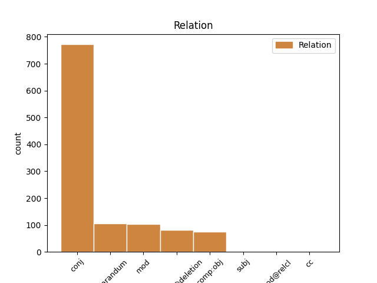
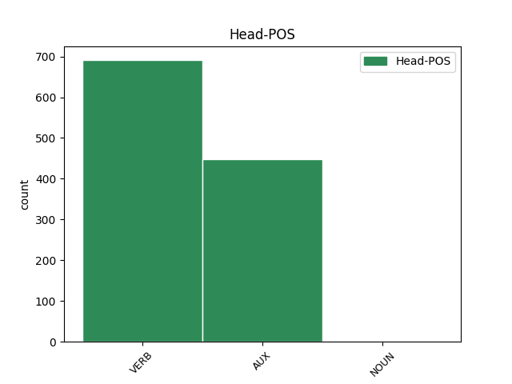
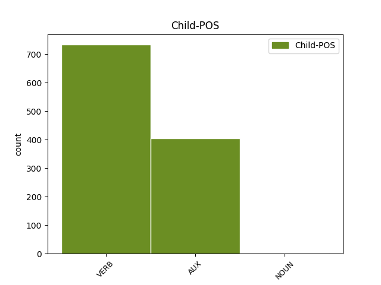

Distribution of features within this leaf



Agreement Rules sorted by frequency.
- When the dependent token is the conjunct(conj) of the head token,
1 ja _ _ _ _ 0 _ _ _
2 # _ _ _ _ 0 _ _ _
3 eg _ _ _ _ 0 _ _ _
4 var _ _ _ _ 0 _ _ _
5 # _ _ _ _ 0 _ _ _
6 eg _ _ _ _ 0 _ _ _
7 var _ _ _ _ 0 _ _ _
8 mykje _ _ _ _ 0 _ _ _
9 i _ _ _ _ 0 _ _ _
10 tømmerskogen _ _ _ _ 0 _ _ _
11 om _ _ _ _ 0 _ _ _
12 vinteren _ _ _ _ 0 _ _ _
13 eg _ _ _ _ 0 _ _ _
14 # _ _ _ _ 0 _ _ _
15 ja _ _ _ _ 0 _ _ _
16 # _ _ _ _ 0 _ _ _
17 det _ _ _ _ 0 _ _ _
18 var vere AUX _ Mood=Ind|Tense=Past|VerbForm=Fin 0 _ _ _
19 eg _ _ _ _ 0 _ _ _
20 ## _ _ _ _ 0 _ _ _
21 det _ _ _ _ 0 _ _ _
22 var vere AUX _ Mood=Ind|Tense=Past|VerbForm=Fin 18 conj _ _
23 eg _ _ _ _ 0 _ _ _
24 ja _ _ _ _ 0 _ _ _
25 . _ _ _ _ 0 _ _ _
1 ja _ _ _ _ 0 _ _ _
2 # _ _ _ _ 0 _ _ _
3 i _ _ _ _ 0 _ _ _
4 lasset _ _ _ _ 0 _ _ _
5 # _ _ _ _ 0 _ _ _
6 for _ _ _ _ 0 _ _ _
7 eg _ _ _ _ 0 _ _ _
8 hadde ha VERB _ Mood=Ind|Tense=Past|VerbForm=Fin 10 reparandum _ _
9 eg _ _ _ _ 0 _ _ _
10 hadde ha VERB _ Mood=Ind|Tense=Past|VerbForm=Fin 0 _ _ _
11 jamnast _ _ _ _ 0 _ _ _
12 gode _ _ _ _ 0 _ _ _
13 hestar _ _ _ _ 0 _ _ _
14 da _ _ _ _ 0 _ _ _
15 ser _ _ _ _ 0 _ _ _
16 du _ _ _ _ 0 _ _ _
17 # _ _ _ _ 0 _ _ _
18 ja _ _ _ _ 0 _ _ _
19 . _ _ _ _ 0 _ _ _
1 det _ _ _ _ 0 _ _ _
2 var vere AUX _ Mood=Ind|Tense=Past|VerbForm=Fin 0 _ _ _
3 ved _ _ _ _ 0 _ _ _
4 sommaren _ _ _ _ 0 _ _ _
5 eg _ _ _ _ 0 _ _ _
6 køyrde køyre VERB _ Mood=Ind|Tense=Past|VerbForm=Fin 2 mod _ _
7 da _ _ _ _ 0 _ _ _
8 ser _ _ _ _ 0 _ _ _
9 du _ _ _ _ 0 _ _ _
10 ## _ _ _ _ 0 _ _ _
11 om _ _ _ _ 0 _ _ _
12 vinteren _ _ _ _ 0 _ _ _
13 da _ _ _ _ 0 _ _ _
14 køyrde _ _ _ _ 0 _ _ _
15 dei _ _ _ _ 0 _ _ _
16 helst _ _ _ _ 0 _ _ _
17 i _ _ _ _ 0 _ _ _
18 åt _ _ _ _ 0 _ _ _
19 ## _ _ _ _ 0 _ _ _
20 jaha _ _ _ _ 0 _ _ _
21 . _ _ _ _ 0 _ _ _
1 nå _ _ _ _ 0 _ _ _
2 nå _ _ _ _ 0 _ _ _
3 var vere VERB _ Mood=Ind|Tense=Past|VerbForm=Fin 9 parataxis@deletion _ _
4 nå _ _ _ _ 0 _ _ _
5 ser _ _ _ _ 0 _ _ _
6 ## _ _ _ _ 0 _ _ _
7 kaffi _ _ _ _ 0 _ _ _
8 dei _ _ _ _ 0 _ _ _
9 kjøpte kjøpe VERB _ Mood=Ind|Tense=Past|VerbForm=Fin 0 _ _ _
10 vi _ _ _ _ 0 _ _ _
11 det _ _ _ _ 0 _ _ _
12 var _ _ _ _ 0 _ _ _
13 ti _ _ _ _ 0 _ _ _
14 øre _ _ _ _ 0 _ _ _
15 koppen _ _ _ _ 0 _ _ _
16 # _ _ _ _ 0 _ _ _
17 ja _ _ _ _ 0 _ _ _
18 . _ _ _ _ 0 _ _ _
1 « _ _ _ _ 0 _ _ _
2 tæsa _ _ _ _ 0 _ _ _
3 » _ _ _ _ 0 _ _ _
4 # _ _ _ _ 0 _ _ _
5 veit vite VERB _ Mood=Ind|Tense=Pres|VerbForm=Fin 0 _ _ _
6 du _ _ _ _ 0 _ _ _
7 kva _ _ _ _ 0 _ _ _
8 det _ _ _ _ 0 _ _ _
9 er vere VERB _ Mood=Ind|Tense=Pres|VerbForm=Fin 5 comp:obj _ _
10 for _ _ _ _ 0 _ _ _
11 noko _ _ _ _ 0 _ _ _
12 ? _ _ _ _ 0 _ _ _
1 « _ _ _ _ 0 _ _ _
2 ha _ _ _ _ 0 _ _ _
3 » _ _ _ _ 0 _ _ _
4 ja _ _ _ _ 0 _ _ _
5 ja _ _ _ _ 0 _ _ _
6 # _ _ _ _ 0 _ _ _
7 e _ _ _ _ 0 _ _ _
8 eg _ _ _ _ 0 _ _ _
9 veit vite VERB _ Mood=Ind|Tense=Pres|VerbForm=Fin 0 _ _ _
10 ikkje _ _ _ _ 0 _ _ _
11 # _ _ _ _ 0 _ _ _
12 dei _ _ _ _ 0 _ _ _
13 snakkar snakke VERB _ Mood=Ind|Tense=Pres|VerbForm=Fin 9 cc _ _
14 så _ _ _ _ 0 _ _ _
15 fint _ _ _ _ 0 _ _ _
16 der _ _ _ _ 0 _ _ _
17 i _ _ _ _ 0 _ _ _
18 Farsund _ _ _ _ 0 _ _ _
19 . _ _ _ _ 0 _ _ _
1 ja _ _ _ _ 0 _ _ _
2 det _ _ _ _ 0 _ _ _
3 spørst spørjast VERB _ Mood=Ind|Tense=Pres|VerbForm=Fin 0 _ _ _
4 # _ _ _ _ 0 _ _ _
5 kva _ _ _ _ 0 _ _ _
6 du _ _ _ _ 0 _ _ _
7 meiner meine VERB _ Mood=Ind|Tense=Pres|VerbForm=Fin 3 subj _ _
8 med _ _ _ _ 0 _ _ _
9 i _ _ _ _ 0 _ _ _
10 # _ _ _ _ 0 _ _ _
11 dei _ _ _ _ 0 _ _ _
12 behøver _ _ _ _ 0 _ _ _
13 iallfall _ _ _ _ 0 _ _ _
14 ikkje _ _ _ _ 0 _ _ _
15 på _ _ _ _ 0 _ _ _
16 daud _ _ _ _ 0 _ _ _
17 og _ _ _ _ 0 _ _ _
18 liv _ _ _ _ 0 _ _ _
19 seie _ _ _ _ 0 _ _ _
20 at _ _ _ _ 0 _ _ _
21 # _ _ _ _ 0 _ _ _
22 nå _ _ _ _ 0 _ _ _
23 skal _ _ _ _ 0 _ _ _
24 eg _ _ _ _ 0 _ _ _
25 snakke _ _ _ _ 0 _ _ _
26 den _ _ _ _ 0 _ _ _
27 dialekten _ _ _ _ 0 _ _ _
28 på _ _ _ _ 0 _ _ _
29 grunn _ _ _ _ 0 _ _ _
30 av _ _ _ _ 0 _ _ _
31 det _ _ _ _ 0 _ _ _
32 at _ _ _ _ 0 _ _ _
33 det _ _ _ _ 0 _ _ _
34 eg _ _ _ _ 0 _ _ _
35 # _ _ _ _ 0 _ _ _
36 eg _ _ _ _ 0 _ _ _
37 flytta _ _ _ _ 0 _ _ _
38 . _ _ _ _ 0 _ _ _
Disagree Examples:
1 kven _ _ _ _ 0 _ _ _
2 var vere VERB _ Mood=Ind|Tense=Past|VerbForm=Fin 0 _ _ _
3 det _ _ _ _ 0 _ _ _
4 som _ _ _ _ 0 _ _ _
5 spelte _ _ _ _ 0 _ _ _
6 da _ _ _ _ 0 _ _ _
7 hugsar hugse VERB _ Mood=Ind|Tense=Pres|VerbForm=Fin 2 conj _ _
8 du _ _ _ _ 0 _ _ _
9 det _ _ _ _ 0 _ _ _
10 ? _ _ _ _ 0 _ _ _
1 ja _ _ _ _ 0 _ _ _
2 # _ _ _ _ 0 _ _ _
3 ja _ _ _ _ 0 _ _ _
4 da _ _ _ _ 0 _ _ _
5 # _ _ _ _ 0 _ _ _
6 det _ _ _ _ 0 _ _ _
7 veit vite VERB _ Mood=Ind|Tense=Pres|VerbForm=Fin 0 _ _ _
8 du _ _ _ _ 0 _ _ _
9 vi _ _ _ _ 0 _ _ _
10 var vere VERB _ Mood=Ind|Tense=Past|VerbForm=Fin 7 comp:obj _ _
11 . _ _ _ _ 0 _ _ _
1 ja _ _ _ _ 0 _ _ _
2 det _ _ _ _ 0 _ _ _
3 var vere AUX _ Mood=Ind|Tense=Past|VerbForm=Fin 0 _ _ _
4 merkeleg _ _ _ _ 0 _ _ _
5 gitt _ _ _ _ 0 _ _ _
6 # _ _ _ _ 0 _ _ _
7 korleis _ _ _ _ 0 _ _ _
8 prisane _ _ _ _ 0 _ _ _
9 har ha AUX _ Mood=Ind|Tense=Pres|VerbForm=Fin 3 conj _ _
10 forandra _ _ _ _ 0 _ _ _
11 seg _ _ _ _ 0 _ _ _
12 . _ _ _ _ 0 _ _ _
1 kan kunne VERB _ Mood=Ind|Tense=Pres|VerbForm=Fin 0 _ _ _
2 jo _ _ _ _ 0 _ _ _
3 med _ _ _ _ 0 _ _ _
4 dieselen _ _ _ _ 0 _ _ _
5 nå _ _ _ _ 0 _ _ _
6 det _ _ _ _ 0 _ _ _
7 var vere VERB _ Mood=Ind|Tense=Past|VerbForm=Fin 1 conj _ _
8 jo _ _ _ _ 0 _ _ _
9 ikkje _ _ _ _ 0 _ _ _
10 . _ _ _ _ 0 _ _ _
1 men _ _ _ _ 0 _ _ _
2 det _ _ _ _ 0 _ _ _
3 var vere VERB _ Mood=Ind|Tense=Past|VerbForm=Fin 5 reparandum _ _
4 jo _ _ _ _ 0 _ _ _
5 er vere VERB _ Mood=Ind|Tense=Pres|VerbForm=Fin 0 _ _ _
6 for _ _ _ _ 0 _ _ _
7 # _ _ _ _ 0 _ _ _
8 gammaldags _ _ _ _ 0 _ _ _
9 men _ _ _ _ 0 _ _ _
10 e _ _ _ _ 0 _ _ _
11 . _ _ _ _ 0 _ _ _